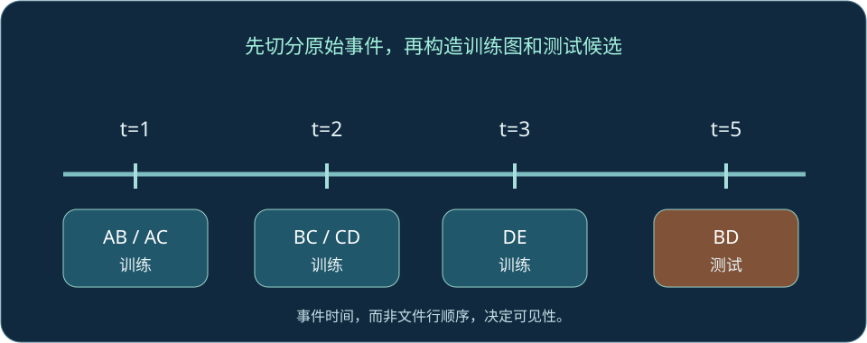

CAPSTONE / CAUSAL SPLIT / GOLDEN TESTS / DATA PROVENANCE
第28章 综合实战项目
从六条带时间戳的合成合作事件出发，完成建图、图不变量、候选新边预测、受限候选评估、错误案例与机器可读研究报告。
1. 研究问题、变量与验收标准
研究题目：在一个小型无向合作事件网络里，仅根据 t≤3 时已发生的连接，排序 t=5 时可能新增的合作边。研究对象是五个匿名参与者 A–E；一次事件以 (u,v,t) 记录参与者和时间。为避免许可、隐私与数据漂移问题，全部六条事件是人工合成，不对应真实作者和机构。节点名字没有人口学属性，也不具备社交影响的因果含义。
本项目的成功条件不仅是得到某个 Precision@K：还要用明确的节点全集构图、规范化无向边、检查度数和连通性、保证未来边不会成为训练边、使用固定候选池、执行独立数值测试、写出结果和边界。没有真实数据集的表现提升声明；本章研究的是让科学结论能被别人复核的工程最小闭环。

| 变量或对象 | 在本研究中的定义 | 必须禁止的误用 |
|---|---|---|
| 节点集 | 始终为 A、B、C、D、E | 训练早期删除暂时孤立的节点 |
| 原始事件 | 无向关系、整数时间、一条记录一次事件 | 忽略时间后随机拆分全部边 |
| 训练图 | 只包含 t≤3 的关系 | 让未来 B–D 影响度数或邻居 |
| 测试窗口 | t=5 观察到新增边 B–D | 把“未出现”标为永久真实负例 |
| 候选池 | 固定 BD 与 BE 两对训练期非边 | 不说明候选集合就谈“准确率” |
| 排序规则 | 训练期共同邻居 CN | 把结构接近当作未来合作因果 |
2. 从六条事件到正确的训练图：时间切分先行
六条事件依次为 AB@1、AC@1、BC@2、CD@2、DE@3、BD@5。t≤3 的前五条属于训练期；BD@5 仅用于测试。将无向边规范化为 frozenset({u,v})（并要求 u≠v）后，训练图有 5 节点、5 边。度数为 A:2、B:2、C:3、D:2、E:1，总度数 2+2+3+2+1=10，符合无向握手定理 ∑d(v)=2m。

训练图的密度 ρ=2m/[n(n−1)]=10/20=0.5；最大连通分量包含 5 节点。若把时间截止提前到 t≤1，只存在 AB、AC 两条边，B 和 C 通过 A 连接，D、E 是孤立节点；图的节点全集仍保持为 5，因而此时有 3 个连通分量。孤立点不应该因没有出现在边表而从研究样本消失。
3. 评分：共同邻居只准使用训练图
共同邻居定义为 CN(u,v)=|N_train(u)∩N_train(v)|。在训练 t≤3 的图中，N(B)={A,C}，N(D)={C,E}，N(E)={D}，所以 CN(B,D)=1（共同邻居 C），CN(B,E)=0；两对均不属于训练图已有边，因此是合格候选。在 t=5 的观察窗口里，BD 恰好成为新边，BE 没有观察到新增事件。
按 CN 降序排序 BD 第一、BE 第二；若同分则按规范化节点对字典序固定处理，避免文件行顺序引起结果不一致。完整评估还应分别报告 Recall、Precision、AP 等指标与候选分母，不应只看一个“通过/未通过”的布尔值。
交互：不同训练时间边界下的图特征
保持节点全集和评估标签固定；只改变可见训练时点。
t≤1 时，B 的邻居为 {A}，D 尚无邻居，CN(B,D)=0；t≤3 时有一个共同邻居 C。这个变化只说明观察到的训练结构不同，不说明“合作必然发生”。真实链接预测还要控制节点新出现、未来标签的观察完整度与被采样候选中假负例的比例。
4. 指标：同样的排名，在不同候选池意味着不同难度
在当前仅两条候选的闭合玩具测试中，t=5 的观察正例为 BD，BD 排第一。因此 Precision@1=1/1=1，Precision@2=1/2=0.5，Recall@1=1/1=1。这并不是 100% 的真实世界预测能力，只是一个被故意设计得可手算的评估协议。若变换候选池（例如加入大量尚未观察到的非边）、观察窗口或排名模型，指标没有可直接比较的保证。
| 可复算结果 | 数值 | 限定解释 |
|---|---|---|
| 训练图 n、m | 5、5 | 截止时间 t≤3 |
| 节点度数 | 2,2,3,2,1 | 全部五节点保留 |
| 训练图密度 | 0.5 | 无向简单图 |
| CN(B,D) / CN(B,E) | 1 / 0 | 未使用未来边 |
| Precision@1 / @2 | 1 / 0.5 | 只有两个候选、一条观察正例 |
| Recall@1 | 1 | 只对 t=5 的单条测试正例 |
“候选 BE 没有成为测试正例”并不证明它永远不可能存在；若长期合作日志存在系统性缺失，连测试正例集合也不完整。面对正式数据集，应冻结时间划分、公开评估代码、检查热门偏差、进行多时窗复验，不能把一次精确拟合包装成稳定泛化。
5. 一个可信的分析流水线还需输出什么？
从工程角度，原始事件及其数据字典是输入；构图语义、时间截止、候选池和排序规则是配置；图不变量、测试断言和评估指标是结果；来源证据、限制条件与使用许可是解释。流程中的每个中间文件都应能重新生成，实验记录不能依赖某人本机的隐含状态或未声明的远程 API。

本项目附带标准库实验 v2/experiments/capstone_28.py，其输出包含节点与边数、度数、候选得分、Precision@1 与使用的时间边界。为防止 Python 逻辑与网页互相复制错误，另使用 NetworkX 独立构图比较相同不变量；项目不需要下载外部私有数据。
6. 不下载数据也能运行的完整最小代码
将下面的程序作为独立 Python 文件执行即可重算示例。代码明确使用两候选集合，不把测试边加入训练期，也不调用神经网络训练。该程序是教学研究的最小封闭版本。
events = [("A", "B", 1), ("A", "C", 1),
("B", "C", 2), ("C", "D", 2),
("D", "E", 3), ("B", "D", 5)]
nodes = set("ABCDE")
training = {frozenset((u, v)) for u, v, t in events if t <= 3}
future = {frozenset((u, v)) for u, v, t in events if t == 5}
assert len(training) == 5 and training.isdisjoint(future)
def neighbors(v, edges):
return {next(iter(edge - {v})) for edge in edges if v in edge}
def cn(u, v, edges):
return len(neighbors(u, edges) & neighbors(v, edges))
pairs = [("B", "D"), ("B", "E")]
scores = {pair: cn(*pair, training) for pair in pairs}
assert scores == {("B", "D"): 1, ("B", "E"): 0}
ranking = sorted(pairs, key=lambda p: (-scores[p], p))
precision_at_1 = float(frozenset(ranking[0]) in future)
assert precision_at_1 == 1.0
print("scores", scores, "P@1", precision_at_1)本仓库中的独立脚本可以从仓库根目录运行：
python3 v2/experiments/capstone_28.py
cd v2
python3 -m unittest discover -s tests -v
python3 scripts/migrate_lessons.py --check
python3 scripts/build_web.py --check研究级复现进一步需要记录 Python 及依赖版本、数据快照哈希、随机种子、重复实验与失败案例、资源消耗和基线对照。OGB 这样的公开基准提供规范拆分与评价器，适合学习外部评估，但本章没有运行 OGB 数据集，也没有比较真实模型精度。
7. 研究报告必须主动列出无法支持的结论
内部有效性：事件时间、未观察候选与训练图去重可能改变评分；外部有效性：五节点图无法代表现实研究者或交通系统；统计效力：一个测试正例、两候选没有稳定置信区间；构念有效性：共同邻居多不证明合作是被某人推动的；数据伦理：真实社交网络要考虑个人可识别性、再传播许可和潜在伤害。
任何“100% 精度”的说法都必须紧接候选池与样本数限定。本页不使用隐藏测试集调参，不宣称论文性能复现，也不因为学习了网络算法就默认可以公开任何用户关系数据。
8. 读者可以独立验证的五件事
六个事件为什么只产生五条训练边？节点度数和边数如何满足握手定理？CN(B,D) 为什么为 1、CN(B,E) 为 0？为什么 100% 的 Precision@1 只限于本例？如何通过独立算法查出未来边泄漏？回答这些问题后，读者掌握的是一条可移植的工作流程：问题定义 → 数据语义 → 数学机制 → 实验断言 → 证据边界。
研究级交叉验证：训练、验证、测试三段协议比单一测试拆分更严格
本章 t≤3 累积可见历史预测 BD@5 是合法的固定教学协议。第二轮另将事件拆成 t≤2 训练、t=3 验证、t=5 测试，并明确在模型选型完成后是否允许将验证历史纳入测试时特征。两个口径不能不加说明地混用。若把未来 BD 反流到训练图，不仅无法再把 BD 当未观测候选，也使 CN(B,E) 从0错误增加到1。
研究页展示合法时间切分和故意泄漏的反例，并链接公开数据静态核验与可执行实验。进入跨章审计和复现实验 →
研究可复现性的原始资料
- Wilkinson 等（2016），FAIR Guiding Principles。
- Hu 等（2020），Open Graph Benchmark。
- OGB 官方 Link Property Prediction 拆分及评估文档。
- Liben-Nowell 与 Kleinberg（2007），Link Prediction。
- NetworkX common_neighbors API。
本页使用完全人工的事件日志。所有精确数值由定义推导并通过独立测试复核；它们不是对真实合著数据或 OGB benchmark 的测试。